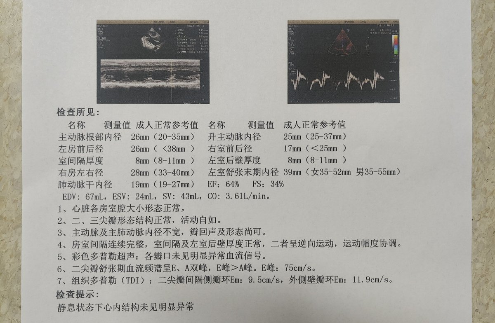

妃宫千早
@neko0202002
@aberyoheiabe 躯体化造成的吧，我心脏同样也很健康，但是焦虑和惊恐会让心脏抽动心率增高，导致呼吸不过来，喘不过气，头晕昏厥，不过我是精神压力造成的，如果心脏没有病理性的病因的话，那只能认定为躯体化了，还有可能加上休息时间过短，睡眠不足导致躯体化加重，最好多增加抗焦虑药

⊹ SUZUME ⊹（寻回互fo）
@aberyoheiabe
做那个心超
医生说好多气
是不是我经常生气，根本看不清
然后拿那个探头在我胸那块使劲捣我，疼死我了😭😭😭
（然后就是一颗除了气很多但很健康的心脏） https://t.co/XJ5maf8O9E